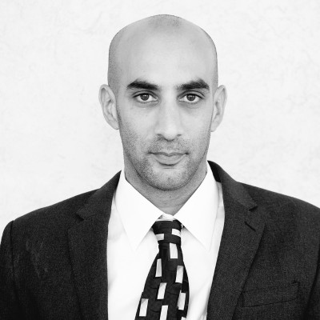

אסטרטגיית איתור, פנייה והכנה לעולם ה־Family Offices
להבין איך Family Offices חושבים.
לדעת איך למצוא אותם.
להגיע מוכנים לפנייה.
עולם ה־Family Offices מציע לחברות אפשרויות משמעותיות להון פרטי ולשותפויות עסקיות. כדי להגיע למשקיעים המתאימים נדרשים היכרות עם העולם הזה, מחקר ממוקד וגישה נכונה.
בתוכנית הליווי האישית נעבוד על החברה שלכם, נבחן אפשרויות רלוונטיות ונזהה צעדים מעשיים שיכולים לקדם אתכם כבר בטווח הקרוב.
המטרה היא לא רק להבין כיצד העולם הזה פועל, אלא לדעת מה לעשות בפועל וכיצד להתחיל.

פעילות בתפקידים בכירים בעולם ה־Family Offices וההון הפרטי
ניסיון מקצועי מול משפחות בעלות הון משמעותי ומשקיעים פרטיים
פעילות וקשרים מקצועיים בשווקים בינלאומיים
ערוץ הון ושותפויות שכדאי להכיר ולבחון ברצינות
הון פרטי יכול להיות מקור משמעותי לצמיחה ולשותפויות אסטרטגיות. עם זאת, עולם ה־Family Offices מגוון מאוד, וכל משפחה פועלת בהתאם לאסטרטגיית השקעה, תחומי עניין ותהליכי קבלת החלטות משלה.
פנייה מוצלחת מתחילה בהבנת ההבדלים הללו, במחקר נכון ובבחירת הגישה המתאימה.
מה Family Offices יכולים להביא
- גמישות במבנה ההשקעה ובאופי השותפות
- אופק השקעה ארוך, מעבר ללחץ של מחזורי קרן
- קשרים עסקיים וגישה לשווקים חדשים
- ניסיון ניהולי של משפחות שבנו עסקים בעצמן
- מעורבות בשלבים שונים, מהשלבים המוקדמים ועד התרחבות משמעותית
אבל הגישה לעולם הזה מורכבת
- אילו משפחות ו־Family Offices מתאימים לחברה שלכם
- היכן לחפש אותם ואיך לחקור את העדפות ההשקעה שלהם
- כיצד לאתר את מקבלי ההחלטות
- איך לפנות בצורה שתעורר עניין אמיתי
- כיצד להתנהל אחרי שנוצר הקשר
Family Office Access & Readiness
שלושה מפגשים אישיים. עבודה מעשית על החברה שלכם.
תוכנית ליווי ממוקדת הכוללת שלושה מפגשים אישיים של כ־85 דקות כל אחד.
במקום לעסוק בדוגמאות תיאורטיות בלבד, נעבוד על החברה שלכם, על הצרכים שלה ועל האפשרויות שעשויות להיות רלוונטיות עבורה.
המטרה היא לזהות הזדמנויות ראשוניות, לרכוש כלים מעשיים ולהתחיל לקדם תהליך עבודה עצמאי מול משקיעים.
מפגש 1: להבין את המשקיעים ולזהות הזדמנויות
נכיר את עולם ה־Family Offices, נבין כיצד משקיעים בוחנים חברות, נחדד את הצגת החברה ונבחן כיווני פעולה והזדמנויות ראשוניות שכדאי לבדוק.
מפגש 2: למצוא את המשקיעים הנכונים ולהגיע אליהם
נעבוד על איתור Family Offices, בחינת התאמתם לחברה, זיהוי מקבלי החלטות, מציאת דרכי גישה וניסוח פניות אישיות וממוקדות.
מפגש 3: להפוך את ההכנה לפעולה
נתכונן לשיחות עם משקיעים, נתרגל שאלות והתנגדויות, נבנה תהליך מעקב והמשך קשר ונגבש תוכנית פעולה ל־30 הימים הבאים.
מה יישאר בידיכם בסיום התהליך?
כיוון ראשוני של משקיעים שכדאי לבחון, שיטה לאיתור ובדיקת התאמה, כלים לפניות אישיות, הכנה לשיחות ותוכנית פעולה מעשית להמשך.
הדגש הוא על התקדמות ממשית. לא רק ללמוד כיצד הדברים עובדים, אלא לזהות מה ניתן לעשות כבר עכשיו ולהתחיל ליישם.
מבדק מוכנות ללא עלות
עד כמה החברה שלכם מוכנה לפנות ל־Family Offices?
לפני שמתחילים לפנות למשקיעים, כדאי להבין מה כבר עובד, מה דורש שיפור והאם אתם מתמקדים בכיוון הנכון.
באמצעות מבדק קצר של כשלוש דקות תוכלו לספר לי על החברה, מטרות הגיוס והניסיון שלכם מול משקיעים. לאחר שאעבור על התשובות, תקבלו ממני התייחסות אישית הכוללת:
למבדק מוכנות ללא עלות- 01נקודת חוזקה מרכזיתמה כבר עובד לטובתכם מול משקיעים
- 02פער שכדאי לטפל בומה כדאי לחזק לפני שפונים
- 03המלצה מעשית לצעד הבאמה כדאי לעשות עכשיו
על עידן לוי
למעלה מעשור של ניסיון. מאות Family Offices. ארבע יבשות.
לאורך למעלה מעשור בתפקידים ניהוליים בכירים, עבדתי מול מאות Family Offices ומשקיעים פרטיים, משפחות בעלות הון משמעותי וכמה מהגופים הפיננסיים המובילים בעולם, במסגרת פעילות בינלאומית שהתפרסה על פני ארבע יבשות.
העבודה מול מגוון רחב של חברות, יזמים ומשקיעים העניקה לי היכרות מעשית עם שני צדי התהליך: כיצד חברות מציגות הזדמנויות, מה מעורר עניין בקרב משקיעים ואילו גורמים משפיעים על התפתחות הקשר ביניהם.
את הניסיון הזה אני מביא לתוכנית Family Office Access & Readiness, שבה אני עובד עם חברות על איתור משקיעים, דרכי גישה וצעדים מעשיים לקידום התהליך.
הרצאות וסדנאות לארגונים
הרצאות וסדנאות מעשיות לחברות, חממות, אקסלרטורים, מרכזי חדשנות וארגונים עסקיים.
המשתתפים מכירים את עולם ה־Family Offices ולומדים כיצד לאתר משקיעים מתאימים, לזהות הזדמנויות ראשוניות, למצוא מקבלי החלטות ולבנות פניות מקצועיות.
הדגש הוא על דוגמאות אמיתיות, כלים מעשיים וצעדים שניתן להתחיל ליישם מיד לאחר ההרצאה.
המטרה היא שהמשתתפים יצאו לא רק עם ידע חדש, אלא גם עם הבנה ברורה של הפעולות הבאות שיוכלו לבצע.
שאלות נפוצות
מה זה Family Office?
גוף שמנהל את ההון וההשקעות של משפחה בעלת הון משמעותי. חלק מהגופים האלה משקיעים ישירות בחברות פרטיות, לצד תחומי השקעה נוספים.
למי התהליך מתאים?
לחברות ויזמים שרוצים לבחון גישה למקורות הון פרטיים וללמוד לעבוד מולם בצורה מקצועית: מייסדים, מנכ"לים, מנהלי פיתוח עסקי ומנהלי כספים, בסטארטאפים, בחברות טכנולוגיה, בחברות תעשייתיות ובחברות צומחות מתחומים נוספים.
האם זה מתאים גם לסטארטאפים בתחילת הדרך?
כן. אנחנו בוחנים את השלב שבו החברה נמצאת, את אופי הפעילות ואת סוג המשקיעים שעשויים להתאים לה.
האם אתה מוצא עבורנו משקיעים?
התוכנית מעניקה לחברה את השיטה והכלים לאתר משקיעים ולפנות אליהם בעצמה. זו תוכנית ליווי מעשית, ולא שירות חיצוני של ניהול גיוס הון.
האם התוכנית כוללת היכרות אישית עם משקיעים?
לא. התוכנית נועדה להעניק לכם את הידע, הכלים והאסטרטגיה הדרושים לאיתור משקיעים רלוונטיים ולפנייה עצמאית ומקצועית אליהם. היא אינה כוללת התחייבות להיכרויות, לפגישות או להשקעה.
מה ההבדל בין התוכנית לבין רשימת משקיעים?
רשימת שמות לבדה אינה מספיקה. התוכנית מלמדת כיצד לזהות את המשקיעים הרלוונטיים, להבין את תחומי העניין שלהם, לאתר את אנשי הקשר המתאימים ולבנות פנייה שמתייחסת לצרכים ולשיקולים של כל משקיע.
מה כולל הליווי?
שלושה מפגשי אונליין אישיים של כ־85 דקות, שבמהלכם עובדים על מיצוב החברה, איתור משקיעים, פניות מותאמות והכנה לשיחות, ובסיומם תוכנית עבודה ל־30 יום.
האם צריך ניסיון קודם בגיוס הון?
לא. התהליך מותאם לרקע ולשלב של החברה.
כמה עולה הליווי?
המחיר נקבע בהתאם לשלב החברה, לצרכים ולמורכבות העבודה. הפרטים נמסרים לאחר בחינת התאמה ראשונית.
אפשר לעבוד באנגלית?
כן. הליווי מתאים גם לחברות ולצוותים בינלאומיים, והמפגשים יכולים להתקיים באנגלית.
הצעד הראשון: לבדוק איפה אתם עומדים
רוצים להבין כיצד החברה שלכם יכולה להתקדם מול Family Offices? התחילו במבדק מוכנות קצר וקבלו התייחסות אישית עם המלצה לצעד הבא.